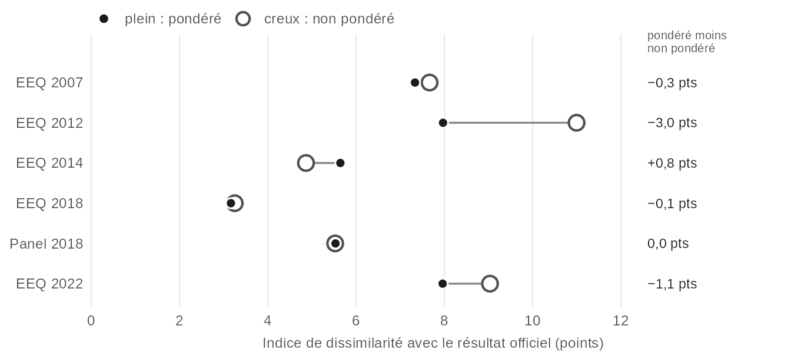
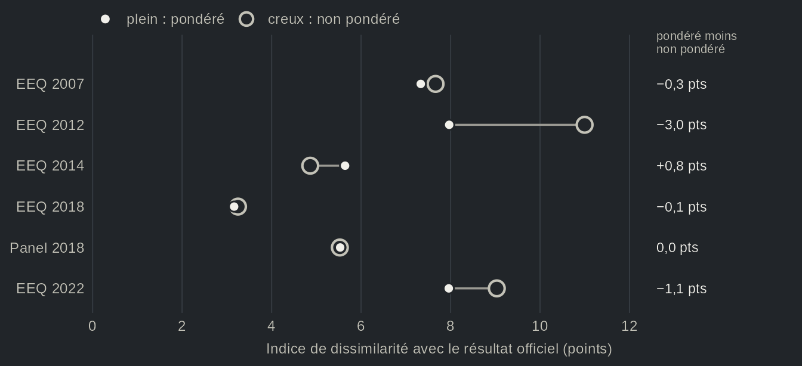
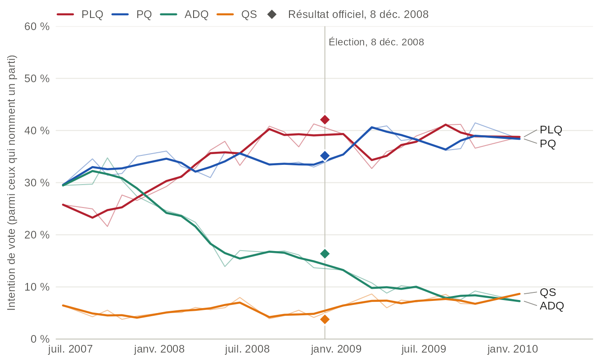
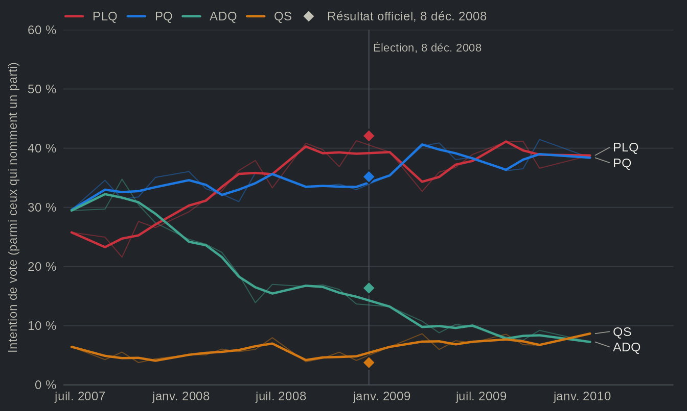

Les enquêtes sous-estiment-elles les libéraux ? Le vote déclaré face aux résultats officiels
Source:vignettes/articles/fr-enquetes-resultats.Rmd
fr-enquetes-resultats.RmdAu Québec, c’est presque un réflexe : les sondages sous-estimeraient le Parti libéral du Québec (PLQ). L’élection de 1998, où les sondages ont surestimé le Parti Québécois (PQ) et sous-estimé les libéraux, en demeure l’exemple type (Durand et Blais, 1999). Aux États-Unis, des travaux relèvent un tout autre biais : une fois le vote passé, plus de répondants disent avoir voté pour le gagnant que le résultat ne le permet (Atkeson, 1999, à propos des primaires présidentielles). Ces deux croyances portent sur les sondages et les enquêtes en général. Qu’en est-il des Études électorales québécoises, qui interrogent les répondants sur leur vote une fois l’élection terminée ? Certaines d’entre elles ont été comparées au résultat (Bélanger et collab., 2025, pour 2022), mais ces enquêtes ont rarement été confrontées aux résultats officiels sur plusieurs élections. C’est ce que nous faisons ici pour six élections, de 2007 à 2022, à partir des six études et des trois panels que Claire Durand et ses collègues ont menés en 2007, 2012 et 2018. Au final, la première croyance ne tient qu’en partie, et la seconde pas du tout. D’une part, le PLQ est sous-estimé dans les six études et panels de 2007 à 2014, de 3 à 7 points de pourcentage des votes valides, et le PQ est surestimé dans chacune des Études électorales québécoises, parfois d’à peine 1 point. D’autre part, l’écart libéral s’amenuise en 2018 et s’inverse légèrement en 2022, dans la marge d’erreur, et le gagnant n’est pas surestimé : il est au contraire sous-estimé lors de cinq des six élections. En 2022, la Coalition avenir Québec (CAQ) l’est de 8 points.
Le vote déclaré, parti par parti


Source : Études électorales québécoises (cercles, juste à gauche de chaque élection) et panels Durand (carrés, juste à droite), vote déclaré parmi les répondants qui nomment un parti ; résultats officiels d'Élections Québec. Les points sont pondérés, avec des intervalles de confiance à 95 %. Points creux : non pondéré. La vue en tableau donne tous les partis, avec les estimations non pondérées.
Vue en tableau
| Parti | Élection | Étude | Vote déclaré, % [IC à 95 %] | n | Officiel, % des votes valides | Écart | Pondération |
|---|---|---|---|---|---|---|---|
| PLQ | 2007 | EEQ 2007 | 25,4 [23,4 ; 27,5] | 1727 | 33,1 | −7,7 pts | non pondéré |
| PLQ | 2007 | EEQ 2007 | 25,8 [23,3 ; 28,4] | 1727 | 33,1 | −7,3 pts | pondéré |
| PLQ | 2007 | Panel 2007 | 28,6 [26,4 ; 31,0] | 1494 | 33,1 | −4,4 pts | non pondéré |
| PLQ | 2008 | EEQ 2008 | 39,2 [36,1 ; 42,4] | 898 | 42,1 | −2,9 pts | non pondéré |
| PLQ | 2012 | EEQ 2012 | 21,8 [19,6 ; 24,2] | 1274 | 31,2 | −9,4 pts | non pondéré |
| PLQ | 2012 | EEQ 2012 | 24,9 [22,2 ; 27,8] | 1274 | 31,2 | −6,3 pts | pondéré |
| PLQ | 2012 | Panel 2012 | 26,4 [23,1 ; 30,0] | 633 | 31,2 | −4,8 pts | non pondéré |
| PLQ | 2014 | EEQ 2014 | 38,1 [35,5 ; 40,8] | 1283 | 41,5 | −3,4 pts | non pondéré |
| PLQ | 2014 | EEQ 2014 | 35,9 [32,8 ; 39,1] | 1283 | 41,5 | −5,6 pts | pondéré |
| PLQ | 2018 | EEQ 2018 | 24,3 [22,5 ; 26,2] | 2016 | 24,8 | −0,5 pts | non pondéré |
| PLQ | 2018 | EEQ 2018 | 23,3 [21,4 ; 25,3] | 2016 | 24,8 | −1,6 pts | pondéré |
| PLQ | 2018 | Panel 2018 | 28,4 [25,2 ; 31,9] | 704 | 24,8 | +3,6 pts | non pondéré |
| PLQ | 2018 | Panel 2018 | 26,9 [23,3 ; 30,9] | 704 | 24,8 | +2,1 pts | pondéré |
| PLQ | 2022 | EEQ 2022 | 13,3 [11,4 ; 15,4] | 1101 | 14,4 | −1,1 pts | non pondéré |
| PLQ | 2022 | EEQ 2022 | 17,1 [13,6 ; 21,4] | 1101 | 14,4 | +2,8 pts | pondéré |
| PQ | 2007 | EEQ 2007 | 30,2 [28,0 ; 32,4] | 1727 | 28,3 | +1,8 pts | non pondéré |
| PQ | 2007 | EEQ 2007 | 30,9 [28,2 ; 33,6] | 1727 | 28,3 | +2,5 pts | pondéré |
| PQ | 2007 | Panel 2007 | 30,8 [28,5 ; 33,2] | 1494 | 28,3 | +2,4 pts | non pondéré |
| PQ | 2008 | EEQ 2008 | 37,4 [34,3 ; 40,6] | 898 | 35,2 | +2,2 pts | non pondéré |
| PQ | 2012 | EEQ 2012 | 40,0 [37,3 ; 42,7] | 1274 | 31,9 | +8,0 pts | non pondéré |
| PQ | 2012 | EEQ 2012 | 38,8 [35,8 ; 41,9] | 1274 | 31,9 | +6,9 pts | pondéré |
| PQ | 2012 | Panel 2012 | 38,4 [34,7 ; 42,2] | 633 | 31,9 | +6,4 pts | non pondéré |
| PQ | 2014 | EEQ 2014 | 26,8 [24,5 ; 29,3] | 1283 | 25,4 | +1,4 pts | non pondéré |
| PQ | 2014 | EEQ 2014 | 29,8 [26,9 ; 33,0] | 1283 | 25,4 | +4,4 pts | pondéré |
| PQ | 2018 | EEQ 2018 | 19,4 [17,8 ; 21,2] | 2016 | 17,1 | +2,4 pts | non pondéré |
| PQ | 2018 | EEQ 2018 | 19,6 [17,8 ; 21,5] | 2016 | 17,1 | +2,5 pts | pondéré |
| PQ | 2018 | Panel 2018 | 15,3 [12,9 ; 18,2] | 704 | 17,1 | −1,7 pts | non pondéré |
| PQ | 2018 | Panel 2018 | 14,9 [12,1 ; 18,2] | 704 | 17,1 | −2,2 pts | pondéré |
| PQ | 2022 | EEQ 2022 | 18,7 [16,5 ; 21,1] | 1101 | 14,6 | +4,1 pts | non pondéré |
| PQ | 2022 | EEQ 2022 | 15,6 [13,4 ; 18,1] | 1101 | 14,6 | +1,0 pts | pondéré |
| ADQ | 2007 | EEQ 2007 | 33,8 [31,6 ; 36,0] | 1727 | 30,8 | +2,9 pts | non pondéré |
| ADQ | 2007 | EEQ 2007 | 31,6 [29,0 ; 34,3] | 1727 | 30,8 | +0,8 pts | pondéré |
| ADQ | 2007 | Panel 2007 | 32,1 [29,8 ; 34,5] | 1494 | 30,8 | +1,3 pts | non pondéré |
| ADQ | 2008 | EEQ 2008 | 16,0 [13,8 ; 18,6] | 898 | 16,4 | −0,3 pts | non pondéré |
| QS | 2007 | EEQ 2007 | 4,3 [3,5 ; 5,4] | 1727 | 3,6 | +0,7 pts | non pondéré |
| QS | 2007 | EEQ 2007 | 4,8 [3,6 ; 6,2] | 1727 | 3,6 | +1,1 pts | pondéré |
| QS | 2007 | Panel 2007 | 3,8 [3,0 ; 4,9] | 1494 | 3,6 | +0,2 pts | non pondéré |
| QS | 2008 | EEQ 2008 | 4,2 [3,1 ; 5,8] | 898 | 3,8 | +0,5 pts | non pondéré |
| QS | 2012 | EEQ 2012 | 7,5 [6,2 ; 9,1] | 1274 | 6,0 | +1,5 pts | non pondéré |
| QS | 2012 | EEQ 2012 | 6,5 [5,1 ; 8,2] | 1274 | 6,0 | +0,5 pts | pondéré |
| QS | 2012 | Panel 2012 | 7,1 [5,3 ; 9,4] | 633 | 6,0 | +1,1 pts | non pondéré |
| QS | 2014 | EEQ 2014 | 10,2 [8,7 ; 12,0] | 1283 | 7,6 | +2,6 pts | non pondéré |
| QS | 2014 | EEQ 2014 | 8,2 [6,8 ; 9,9] | 1283 | 7,6 | +0,6 pts | pondéré |
| QS | 2018 | EEQ 2018 | 17,0 [15,4 ; 18,7] | 2016 | 16,1 | +0,9 pts | non pondéré |
| QS | 2018 | EEQ 2018 | 16,3 [14,6 ; 18,0] | 2016 | 16,1 | +0,1 pts | pondéré |
| QS | 2018 | Panel 2018 | 12,4 [10,1 ; 15,0] | 704 | 16,1 | −3,7 pts | non pondéré |
| QS | 2018 | Panel 2018 | 12,8 [10,0 ; 16,2] | 704 | 16,1 | −3,3 pts | pondéré |
| QS | 2022 | EEQ 2022 | 19,0 [16,8 ; 21,4] | 1101 | 15,4 | +3,6 pts | non pondéré |
| QS | 2022 | EEQ 2022 | 17,2 [14,7 ; 20,1] | 1101 | 15,4 | +1,8 pts | pondéré |
| CAQ | 2012 | EEQ 2012 | 25,4 [23,1 ; 27,9] | 1274 | 27,1 | −1,6 pts | non pondéré |
| CAQ | 2012 | EEQ 2012 | 25,4 [22,8 ; 28,1] | 1274 | 27,1 | −1,7 pts | pondéré |
| CAQ | 2012 | Panel 2012 | 23,9 [20,7 ; 27,3] | 633 | 27,1 | −3,2 pts | non pondéré |
| CAQ | 2014 | EEQ 2014 | 21,6 [19,4 ; 23,9] | 1283 | 23,1 | −1,5 pts | non pondéré |
| CAQ | 2014 | EEQ 2014 | 23,1 [20,5 ; 26,0] | 1283 | 23,1 | +0,1 pts | pondéré |
| CAQ | 2018 | EEQ 2018 | 34,7 [32,7 ; 36,8] | 2016 | 37,4 | −2,7 pts | non pondéré |
| CAQ | 2018 | EEQ 2018 | 35,8 [33,6 ; 38,1] | 2016 | 37,4 | −1,6 pts | pondéré |
| CAQ | 2018 | Panel 2018 | 37,4 [33,9 ; 41,0] | 704 | 37,4 | −0,1 pts | non pondéré |
| CAQ | 2018 | Panel 2018 | 39,1 [34,8 ; 43,5] | 704 | 37,4 | +1,7 pts | pondéré |
| CAQ | 2022 | EEQ 2022 | 33,1 [30,3 ; 35,9] | 1101 | 41,0 | −7,9 pts | non pondéré |
| CAQ | 2022 | EEQ 2022 | 33,0 [29,3 ; 36,9] | 1101 | 41,0 | −8,0 pts | pondéré |
| PCQ | 2012 | EEQ 2012 | n.p. | 1274 | non pondéré | ||
| PCQ | 2012 | EEQ 2012 | n.p. | 1274 | pondéré | ||
| PCQ | 2012 | Panel 2012 | n.p. | 633 | non pondéré | ||
| PCQ | 2014 | EEQ 2014 | n.p. | 1283 | non pondéré | ||
| PCQ | 2014 | EEQ 2014 | n.p. | 1283 | pondéré | ||
| PCQ | 2018 | EEQ 2018 | n.p. | 2016 | non pondéré | ||
| PCQ | 2018 | EEQ 2018 | n.p. | 2016 | pondéré | ||
| PCQ | 2018 | Panel 2018 | n.p. | 704 | non pondéré | ||
| PCQ | 2018 | Panel 2018 | n.p. | 704 | pondéré | ||
| PCQ | 2022 | EEQ 2022 | 13,2 [11,3 ; 15,3] | 1101 | 12,9 | +0,3 pts | non pondéré |
| PCQ | 2022 | EEQ 2022 | 13,5 [11,3 ; 16,2] | 1101 | 12,9 | +0,6 pts | pondéré |
| Autres | 2007 | EEQ 2007 | 6,3 [5,3 ; 7,6] | 1727 | 4,1 | +2,2 pts | non pondéré |
| Autres | 2007 | EEQ 2007 | 7,0 [5,6 ; 8,8] | 1727 | 4,1 | +2,9 pts | pondéré |
| Autres | 2007 | Panel 2007 | 4,6 [3,7 ; 5,8] | 1494 | 4,1 | +0,5 pts | non pondéré |
| Autres | 2008 | EEQ 2008 | 3,1 [2,2 ; 4,5] | 898 | 2,6 | +0,5 pts | non pondéré |
| Autres | 2012 | EEQ 2012 | 5,3 [4,2 ; 6,6] | 1274 | 3,8 | +1,5 pts | non pondéré |
| Autres | 2012 | EEQ 2012 | 4,4 [3,4 ; 5,7] | 1274 | 3,8 | +0,6 pts | pondéré |
| Autres | 2012 | Panel 2012 | 4,3 [2,9 ; 6,1] | 633 | 3,8 | +0,5 pts | non pondéré |
| Autres | 2014 | EEQ 2014 | 3,3 [2,4 ; 4,4] | 1283 | 2,4 | +0,9 pts | non pondéré |
| Autres | 2014 | EEQ 2014 | 3,0 [2,1 ; 4,2] | 1283 | 2,4 | +0,5 pts | pondéré |
| Autres | 2018 | EEQ 2018 | 4,6 [3,7 ; 5,6] | 2016 | 4,6 | 0,0 pts | non pondéré |
| Autres | 2018 | EEQ 2018 | 5,1 [4,1 ; 6,3] | 2016 | 4,6 | +0,5 pts | pondéré |
| Autres | 2018 | Panel 2018 | 6,5 [4,9 ; 8,6] | 704 | 4,6 | +1,9 pts | non pondéré |
| Autres | 2018 | Panel 2018 | 6,4 [4,5 ; 9,0] | 704 | 4,6 | +1,8 pts | pondéré |
| Autres | 2022 | EEQ 2022 | 2,8 [2,0 ; 4,0] | 1101 | 1,7 | +1,1 pts | non pondéré |
| Autres | 2022 | EEQ 2022 | 3,5 [2,0 ; 6,1] | 1101 | 1,7 | +1,8 pts | pondéré |
Premièrement, les libéraux. De 2007 à 2014, le PLQ est sous-estimé dans les six études et panels, jusqu’à 7 points en 2007 et 6 points en 2014, l’année de son retour au pouvoir avec 42 % des voix. Le phénomène s’estompe ensuite. L’étude de 2018 ne place plus le PLQ qu’à 2 points sous son résultat, et celle de 2022 le place 3 points au-dessus. Deuxièmement, le PQ est surestimé dans chaque Étude électorale québécoise, d’à peine 1 point en 2022 et jusqu’à 7 points en 2012 (39 % de vote déclaré contre 32 % au résultat officiel). Pris un à un, plusieurs de ces écarts se situent dans la marge d’erreur : ceux du PQ en 2007, 2008 et 2022, et ceux du PLQ en 2008, 2018 et 2022.
Troisièmement, et contrairement à ce que laisseraient attendre les travaux sur les enquêtes postélectorales, le gagnant est rarement surestimé. La seule exception est l’élection de 2012, remportée par le PQ. En 2008 et 2018, la sous-estimation du gagnant reste dans la marge d’erreur. Il en va autrement en 2022 : la CAQ a obtenu 41 % des voix, mais seulement 33 % des répondants de l’étude disent avoir voté pour elle, comme le relèvent aussi Bélanger et collaborateurs (2025) avec la même étude (33,7 % contre 41 %). Tous les partis ne sont pas mal mesurés en 2022, toutefois : le Parti conservateur du Québec (PCQ) est proche de son résultat (14 % contre 13 %), comme ces auteurs le constatent aussi. C’est le sens des écarts qui frappe. De 2007 à 2014 du moins, les écarts ne sont pas un bruit aléatoire : ils vont dans le même sens, pour les mêmes partis.
L’écart libéral est-il une affaire de langue ?
L’explication la plus courante de l’écart libéral est linguistique. Les non-francophones votent massivement libéral : en 2014, 87 % des non-francophones qui déclarent un vote ont choisi le PLQ, contre 25 % des francophones. Une enquête qui en joint trop peu sous-estimera donc le parti. Or, les études sont pondérées, entre autres, selon la langue, de sorte que les non-francophones devraient y avoir, parmi l’ensemble des répondants, à peu près le poids qu’ils ont dans le recensement. Parmi ceux qui déclarent un vote, ils sont toutefois moins nombreux : 17 % en 2014, contre 19 % de l’ensemble des répondants. Nous examinons donc ce qui se passe lorsque nous redonnons aux non-francophones, parmi les votants, la part qu’ils occupent dans l’ensemble de l’échantillon. Le test est généreux, puisqu’il suppose qu’ils nomment un parti aussi souvent que les francophones.


Source : Études électorales québécoises, pondérées, répondants dont la langue maternelle (ou, si elle manque ou est multiple, la langue parlée à la maison) est connue ; résultats officiels d'Élections Québec. Francophones : langue maternelle française. Rééquilibré : les répondants qui déclarent un vote sont pondérés de nouveau pour que les non-francophones y aient la même part que parmi l'ensemble des répondants ; le vote de chaque groupe linguistique ne change pas. L'étude de 2008, dont la pondération est calée sur le vote, est laissée de côté. La vue en tableau donne le vote de chaque groupe et la part de non-francophones parmi les votants qui aurait donné le résultat du PLQ.
Vue en tableau
| Parti | Étude | Déclaré, % | Rééquilibré, % | Officiel, % | Écart déclaré | Écart rééquilibré | Chez les francophones, % | Chez les non-francophones, % | Non-francophones parmi les votants, % | Non-francophones parmi tous les répondants, % | Part de non-francophones qui donnerait le résultat du PLQ, % | n |
|---|---|---|---|---|---|---|---|---|---|---|---|---|
| PLQ | EEQ 2007 | 25,8 | 26,9 | 33,1 | −7,3 pts | −6,2 pts | 20,3 | 58,1 | 14,5 | 17,6 | 33,9 | 1726 |
| PLQ | EEQ 2012 | 24,9 | 25,9 | 31,2 | −6,3 pts | −5,3 pts | 15,5 | 65,5 | 18,8 | 20,9 | 31,4 | 1274 |
| PLQ | EEQ 2014 | 35,8 | 37,2 | 41,5 | −5,7 pts | −4,3 pts | 25,2 | 87,3 | 17,1 | 19,3 | 26,3 | 1282 |
| PLQ | EEQ 2018 | 23,3 | 25,8 | 24,8 | −1,6 pts | +1,0 pts | 12,2 | 71,6 | 18,6 | 22,9 | 21,2 | 2016 |
| PLQ | EEQ 2022 | 16,8 | 17,2 | 14,4 | +2,4 pts | +2,9 pts | 6,1 | 54,5 | 22,1 | 23,0 | 17,1 | 1056 |
| PQ | EEQ 2007 | 30,8 | 30,2 | 28,3 | +2,5 pts | +1,9 pts | 33,8 | 13,4 | 14,5 | 17,6 | 1726 | |
| PQ | EEQ 2012 | 38,8 | 38,0 | 31,9 | +6,9 pts | +6,0 pts | 46,4 | 6,0 | 18,8 | 20,9 | 1274 | |
| PQ | EEQ 2014 | 29,8 | 29,1 | 25,4 | +4,5 pts | +3,8 pts | 35,3 | 3,2 | 17,1 | 19,3 | 1282 | |
| PQ | EEQ 2018 | 19,6 | 18,7 | 17,1 | +2,5 pts | +1,6 pts | 23,4 | 2,6 | 18,6 | 22,9 | 2016 | |
| PQ | EEQ 2022 | 15,7 | 15,6 | 14,6 | +1,1 pts | +0,9 pts | 19,7 | 1,7 | 22,1 | 23,0 | 1056 |
La réponse est assez nette : la langue n’explique qu’une petite part de l’écart. Dans les trois Études électorales québécoises pondérées de 2007, 2012 et 2014, où l’écart libéral atteint de 6 à 7 points, le rééquilibrage en comble de 1,0 à 1,4 point, et réduit l’excédent du PQ de 0,6 à 0,8 point. Pour combler l’écart du PLQ par la seule langue, il aurait fallu que les non-francophones forment de 26 % à 34 % des votants, alors qu’ils représentent de 18 % à 21 % de l’ensemble des répondants. Autrement dit, l’écart libéral ne tient pas seulement à un manque de non-francophones. Il y a lieu de croire qu’il s’agit aussi d’un écart à l’intérieur des groupes linguistiques, vraisemblablement chez les francophones : dans ces études, ou bien les électeurs libéraux manquent aux échantillons, ou bien ils ne déclarent pas leur vote libéral. En 2018, en revanche, la même correction porte le PLQ légèrement au-delà de son résultat (+1,0 point). L’écart était faible cette année-là, et la composition linguistique pourrait en expliquer l’essentiel.
La pondération aide-t-elle ?


Source : Études électorales québécoises et panels Durand, vote déclaré ; résultats officiels d'Élections Québec. Indice de dissimilarité : la moitié de la somme, sur les partis, de l'écart absolu entre la part déclarée et la part officielle, en points. C'est la part des répondants qui devraient changer de parti pour que l'enquête donne le résultat (0 : identiques). Un parti qu'une étude ne proposait pas compte dans ses Autres. Les études non pondérées (2008, et les panels de 2007 et 2012) sont dans la vue en tableau.
Vue en tableau
| Élection | Étude | Pondération | Indice de dissimilarité (points) |
|---|---|---|---|
| 2007 | EEQ 2007 | non pondéré | 7,7 |
| 2007 | EEQ 2007 | pondéré | 7,3 |
| 2007 | Panel 2007 | non pondéré | 4,4 |
| 2008 | EEQ 2008 | non pondéré | 3,2 |
| 2012 | EEQ 2012 | non pondéré | 11,0 |
| 2012 | EEQ 2012 | pondéré | 8,0 |
| 2012 | Panel 2012 | non pondéré | 8,0 |
| 2014 | EEQ 2014 | non pondéré | 4,9 |
| 2014 | EEQ 2014 | pondéré | 5,6 |
| 2018 | EEQ 2018 | non pondéré | 3,2 |
| 2018 | EEQ 2018 | pondéré | 3,2 |
| 2018 | Panel 2018 | non pondéré | 5,5 |
| 2018 | Panel 2018 | pondéré | 5,5 |
| 2022 | EEQ 2022 | non pondéré | 9,0 |
| 2022 | EEQ 2022 | pondéré | 8,0 |
Si la langue explique peu, on ne peut guère attendre davantage de la pondération, qui ajuste l’échantillon au recensement, et non au vote. L’indice de dissimilarité permet de le vérifier : il donne la part des répondants qui devraient changer de parti pour que l’enquête reproduise le résultat. La pondération rapproche les études de 2012 et de 2022 du résultat : l’indice y recule de 3,0 points en 2012 et de 1,1 point en 2022. Elle éloigne en revanche légèrement l’étude de 2014. Notons toutefois que l’indice demeure entre 3,2 et 8,0 points dans les études pondérées, et que deux études non pondérées, celle de 2008 et le panel de 2007, font mieux que la plupart d’entre elles (3,2 et 4,4 points). Une pondération fondée sur les totaux du recensement ne rend donc pas, à elle seule, le vote déclaré d’une étude plus exact.
Avant le vote : l’ampleur des mouvements d’intention


Source : sondages CROP, intention de vote (avec relance des indécis sur le parti vers lequel ils penchent, là où le sondage l'a demandé), environ 850 répondants par mois, parmi ceux qui nomment un parti ; résultats officiels d'Élections Québec (losanges). Non pondéré. Par construction, les sondages surreprésentent la région de Québec (20 % des répondants, environ le double de son poids dans la population) ; ces parts lui accordent donc trop de poids. Lignes foncées : la moyenne des sondages à un mois et demi ou moins de chaque sondage ; lignes pâles : chaque mois. Les intervalles de confiance à 95 % de chaque sondage sont dans la vue en tableau.
Vue en tableau
| Sondage (mois) | Parti | Intention, % [IC à 95 %] | n |
|---|---|---|---|
| 2007-06 | PLQ | 25,8 [23,0 ; 28,8] | 869 |
| 2007-06 | PQ | 29,6 [26,6 ; 32,7] | 869 |
| 2007-06 | ADQ | 29,5 [26,5 ; 32,6] | 869 |
| 2007-06 | QS | 6,4 [5,0 ; 8,3] | 869 |
| 2007-06 | CAQ | — | |
| 2007-06 | PCQ | — | |
| 2007-06 | Autres | 8,7 [7,0 ; 10,8] | 869 |
| 2007-08 | PLQ | 25,0 [22,2 ; 28,0] | 865 |
| 2007-08 | PQ | 34,6 [31,5 ; 37,8] | 865 |
| 2007-08 | ADQ | 29,7 [26,8 ; 32,8] | 865 |
| 2007-08 | QS | 4,3 [3,1 ; 5,8] | 865 |
| 2007-08 | CAQ | — | |
| 2007-08 | PCQ | — | |
| 2007-08 | Autres | 6,5 [5,0 ; 8,3] | 865 |
| 2007-09 | PLQ | 21,6 [19,0 ; 24,5] | 866 |
| 2007-09 | PQ | 31,4 [28,4 ; 34,6] | 866 |
| 2007-09 | ADQ | 34,8 [31,7 ; 38,0] | 866 |
| 2007-09 | QS | 5,5 [4,2 ; 7,3] | 866 |
| 2007-09 | CAQ | — | |
| 2007-09 | PCQ | — | |
| 2007-09 | Autres | 6,7 [5,2 ; 8,6] | 866 |
| 2007-10 | PLQ | 27,6 [24,7 ; 30,7] | 847 |
| 2007-10 | PQ | 31,8 [28,7 ; 35,0] | 847 |
| 2007-10 | ADQ | 30,5 [27,5 ; 33,6] | 847 |
| 2007-10 | QS | 3,8 [2,7 ; 5,3] | 847 |
| 2007-10 | CAQ | — | |
| 2007-10 | PCQ | — | |
| 2007-10 | Autres | 6,4 [4,9 ; 8,2] | 847 |
| 2007-11 | PLQ | 26,6 [23,8 ; 29,6] | 884 |
| 2007-11 | PQ | 35,1 [32,0 ; 38,3] | 884 |
| 2007-11 | ADQ | 27,4 [24,5 ; 30,4] | 884 |
| 2007-11 | QS | 4,4 [3,2 ; 6,0] | 884 |
| 2007-11 | CAQ | — | |
| 2007-11 | PCQ | — | |
| 2007-11 | Autres | 6,6 [5,1 ; 8,4] | 884 |
| 2008-01 | PLQ | 29,3 [26,3 ; 32,3] | 882 |
| 2008-01 | PQ | 36,1 [32,9 ; 39,3] | 882 |
| 2008-01 | ADQ | 24,6 [21,9 ; 27,6] | 882 |
| 2008-01 | QS | 5,1 [3,8 ; 6,8] | 882 |
| 2008-01 | CAQ | — | |
| 2008-01 | PCQ | — | |
| 2008-01 | Autres | 5,0 [3,7 ; 6,6] | 882 |
| 2008-02 | PLQ | 31,4 [28,3 ; 34,6] | 845 |
| 2008-02 | PQ | 33,1 [30,0 ; 36,4] | 845 |
| 2008-02 | ADQ | 23,8 [21,0 ; 26,8] | 845 |
| 2008-02 | QS | 5,1 [3,8 ; 6,8] | 845 |
| 2008-02 | CAQ | — | |
| 2008-02 | PCQ | — | |
| 2008-02 | Autres | 6,6 [5,1 ; 8,5] | 845 |
| 2008-03 | PLQ | 32,8 [29,8 ; 36,0] | 875 |
| 2008-03 | PQ | 32,2 [29,2 ; 35,4] | 875 |
| 2008-03 | ADQ | 22,4 [19,8 ; 25,3] | 875 |
| 2008-03 | QS | 6,1 [4,7 ; 7,8] | 875 |
| 2008-03 | CAQ | — | |
| 2008-03 | PCQ | — | |
| 2008-03 | Autres | 6,5 [5,1 ; 8,4] | 875 |
| 2008-04 | PLQ | 36,2 [33,0 ; 39,6] | 817 |
| 2008-04 | PQ | 31,0 [27,9 ; 34,2] | 817 |
| 2008-04 | ADQ | 18,6 [16,1 ; 21,4] | 817 |
| 2008-04 | QS | 5,6 [4,2 ; 7,4] | 817 |
| 2008-04 | CAQ | — | |
| 2008-04 | PCQ | — | |
| 2008-04 | Autres | 8,6 [6,8 ; 10,7] | 817 |
| 2008-05 | PLQ | 37,9 [34,7 ; 41,2] | 849 |
| 2008-05 | PQ | 35,8 [32,6 ; 39,1] | 849 |
| 2008-05 | ADQ | 13,9 [11,7 ; 16,4] | 849 |
| 2008-05 | QS | 6,0 [4,6 ; 7,8] | 849 |
| 2008-05 | CAQ | — | |
| 2008-05 | PCQ | — | |
| 2008-05 | Autres | 6,4 [4,9 ; 8,2] | 849 |
| 2008-06 | PLQ | 33,3 [30,3 ; 36,5] | 877 |
| 2008-06 | PQ | 35,5 [32,4 ; 38,7] | 877 |
| 2008-06 | ADQ | 17,0 [14,6 ; 19,6] | 877 |
| 2008-06 | QS | 8,0 [6,4 ; 10,0] | 877 |
| 2008-06 | CAQ | — | |
| 2008-06 | PCQ | — | |
| 2008-06 | Autres | 6,3 [4,8 ; 8,1] | 877 |
| 2008-08 | PLQ | 40,8 [37,5 ; 44,2] | 818 |
| 2008-08 | PQ | 33,4 [30,2 ; 36,7] | 818 |
| 2008-08 | ADQ | 16,6 [14,2 ; 19,3] | 818 |
| 2008-08 | QS | 3,9 [2,8 ; 5,5] | 818 |
| 2008-08 | CAQ | — | |
| 2008-08 | PCQ | — | |
| 2008-08 | Autres | 5,3 [3,9 ; 7,0] | 818 |
| 2008-09 | PLQ | 39,7 [36,6 ; 43,0] | 911 |
| 2008-09 | PQ | 33,6 [30,6 ; 36,7] | 911 |
| 2008-09 | ADQ | 16,9 [14,6 ; 19,5] | 911 |
| 2008-09 | QS | 4,5 [3,3 ; 6,1] | 911 |
| 2008-09 | CAQ | — | |
| 2008-09 | PCQ | — | |
| 2008-09 | Autres | 5,3 [4,0 ; 6,9] | 911 |
| 2008-10 | PLQ | 36,9 [33,7 ; 40,2] | 849 |
| 2008-10 | PQ | 33,9 [30,8 ; 37,2] | 849 |
| 2008-10 | ADQ | 16,1 [13,8 ; 18,8] | 849 |
| 2008-10 | QS | 5,5 [4,2 ; 7,3] | 849 |
| 2008-10 | CAQ | — | |
| 2008-10 | PCQ | — | |
| 2008-10 | Autres | 7,5 [5,9 ; 9,5] | 849 |
| 2008-11 | PLQ | 41,3 [38,0 ; 44,6] | 870 |
| 2008-11 | PQ | 33,0 [29,9 ; 36,2] | 870 |
| 2008-11 | ADQ | 13,7 [11,5 ; 16,1] | 870 |
| 2008-11 | QS | 4,1 [3,0 ; 5,7] | 870 |
| 2008-11 | CAQ | — | |
| 2008-11 | PCQ | — | |
| 2008-11 | Autres | 7,9 [6,3 ; 9,9] | 870 |
| 2009-01 | PLQ | 39,3 [36,1 ; 42,7] | 839 |
| 2009-01 | PQ | 35,4 [32,2 ; 38,7] | 839 |
| 2009-01 | ADQ | 13,2 [11,1 ; 15,7] | 839 |
| 2009-01 | QS | 6,4 [5,0 ; 8,3] | 839 |
| 2009-01 | CAQ | — | |
| 2009-01 | PCQ | — | |
| 2009-01 | Autres | 5,6 [4,2 ; 7,4] | 839 |
| 2009-03 | PLQ | 32,7 [29,5 ; 36,0] | 798 |
| 2009-03 | PQ | 40,4 [37,0 ; 43,8] | 798 |
| 2009-03 | ADQ | 10,8 [8,8 ; 13,1] | 798 |
| 2009-03 | QS | 8,6 [6,9 ; 10,8] | 798 |
| 2009-03 | CAQ | — | |
| 2009-03 | PCQ | — | |
| 2009-03 | Autres | 7,5 [5,9 ; 9,6] | 798 |
| 2009-04 | PLQ | 36,0 [32,8 ; 39,2] | 851 |
| 2009-04 | PQ | 40,9 [37,6 ; 44,2] | 851 |
| 2009-04 | ADQ | 8,8 [7,1 ; 10,9] | 851 |
| 2009-04 | QS | 6,0 [4,6 ; 7,8] | 851 |
| 2009-04 | CAQ | — | |
| 2009-04 | PCQ | — | |
| 2009-04 | Autres | 8,3 [6,7 ; 10,4] | 851 |
| 2009-05 | PLQ | 36,7 [33,5 ; 40,1] | 830 |
| 2009-05 | PQ | 38,1 [34,8 ; 41,4] | 830 |
| 2009-05 | ADQ | 10,2 [8,4 ; 12,5] | 830 |
| 2009-05 | QS | 7,5 [5,9 ; 9,5] | 830 |
| 2009-05 | CAQ | — | |
| 2009-05 | PCQ | — | |
| 2009-05 | Autres | 7,5 [5,9 ; 9,5] | 830 |
| 2009-06 | PLQ | 38,9 [35,6 ; 42,3] | 814 |
| 2009-06 | PQ | 38,5 [35,2 ; 41,8] | 814 |
| 2009-06 | ADQ | 9,8 [8,0 ; 12,1] | 814 |
| 2009-06 | QS | 7,1 [5,5 ; 9,1] | 814 |
| 2009-06 | CAQ | — | |
| 2009-06 | PCQ | — | |
| 2009-06 | Autres | 5,7 [4,3 ; 7,5] | 814 |
| 2009-08 | PLQ | 41,1 [37,8 ; 44,4] | 840 |
| 2009-08 | PQ | 36,2 [33,0 ; 39,5] | 840 |
| 2009-08 | ADQ | 8,1 [6,4 ; 10,1] | 840 |
| 2009-08 | QS | 8,6 [6,9 ; 10,7] | 840 |
| 2009-08 | CAQ | — | |
| 2009-08 | PCQ | — | |
| 2009-08 | Autres | 6,1 [4,6 ; 7,9] | 840 |
| 2009-09 | PLQ | 41,2 [37,8 ; 44,6] | 794 |
| 2009-09 | PQ | 36,5 [33,2 ; 39,9] | 794 |
| 2009-09 | ADQ | 7,6 [5,9 ; 9,6] | 794 |
| 2009-09 | QS | 6,8 [5,2 ; 8,8] | 794 |
| 2009-09 | CAQ | — | |
| 2009-09 | PCQ | — | |
| 2009-09 | Autres | 7,9 [6,2 ; 10,0] | 794 |
| 2009-10 | PLQ | 36,6 [33,3 ; 40,0] | 803 |
| 2009-10 | PQ | 41,5 [38,1 ; 44,9] | 803 |
| 2009-10 | ADQ | 9,2 [7,4 ; 11,4] | 803 |
| 2009-10 | QS | 6,7 [5,2 ; 8,7] | 803 |
| 2009-10 | CAQ | — | |
| 2009-10 | PCQ | — | |
| 2009-10 | Autres | 6,0 [4,5 ; 7,8] | 803 |
| 2010-01 | PLQ | 38,8 [35,4 ; 42,2] | 784 |
| 2010-01 | PQ | 38,4 [35,0 ; 41,9] | 784 |
| 2010-01 | ADQ | 7,3 [5,6 ; 9,3] | 784 |
| 2010-01 | QS | 8,7 [6,9 ; 10,9] | 784 |
| 2010-01 | CAQ | — | |
| 2010-01 | PCQ | — | |
| 2010-01 | Autres | 6,9 [5,3 ; 8,9] | 784 |
Une enquête postélectorale a un avantage sur un sondage : le vote sur lequel elle porte a déjà eu lieu. Durand et Blais (2020) distinguent à cet égard le simple raté (polling miss), lorsque des électeurs changent d’avis après le dernier sondage ou que les indécis se répartissent inégalement, de l’échec des sondages (poll failure), lorsque c’est la méthode qui est en cause. Les sondages mensuels de CROP montrent bien pourquoi la distinction importe. Entre juin 2007 et novembre 2008, l’Action démocratique du Québec (ADQ), alors opposition officielle, passe de 29 % à 14 % des intentions de vote, et le PQ repasse devant le PLQ en juin 2008 (35 % contre 33 %). Le dernier sondage avant l’élection, en novembre 2008, place le PLQ à 41 % ; le parti obtient 42 %, à l’intérieur de la marge d’erreur du sondage. L’étude de 2008, qui mesure le vote après l’élection et n’est pas pondérée non plus, place le PLQ à 39 %, plus loin du résultat que le dernier sondage. Comme elle a été menée après le vote, des mouvements de dernière minute ne peuvent expliquer cet écart, si faible soit-il. Il tient à qui répond, et à ce que les répondants déclarent.
En somme
La croyance selon laquelle les enquêtes sous-estiment les libéraux tient pour les Études électorales québécoises de 2007 à 2014, mais non par la suite, et la langue, suspect habituel, n’en explique que 1,0 à 1,4 point. Le PQ est surestimé dans la plupart des études, et le gagnant est plus souvent sous-estimé que surestimé. Notre analyse n’est toutefois pas sans limite. D’abord, le vote déclaré repose sur la mémoire des répondants et n’est mesuré que parmi ceux qui nomment un parti. Ensuite, une étude de 1 278 votants (la médiane des six études) comporte, avant pondération, une marge d’erreur pouvant atteindre 2,7 points pour chaque parti, et près de 4 points une fois la pondération prise en compte, comme le montrent les intervalles des vues en tableau. Surtout, la comparaison avec les résultats officiels ne permet pas de départager deux sources d’erreur : les électeurs qui ne participent pas à l’enquête, et les répondants qui ne déclarent pas leur vote tel qu’ils l’ont exprimé. Au Royaume-Uni, l’erreur des sondages de 2015 tenait d’abord à des échantillons non représentatifs (Sturgis et collab., 2018), comme au Québec en 1998 (Durand et Blais, 1999) ; rien ici ne permet de dire s’il en va encore de même. Une question reste ouverte : l’écart de la CAQ en 2022 est-il ponctuel, ou ses électrices et électeurs jouent-ils désormais le rôle longtemps tenu par l’électorat libéral, celui d’un électorat moins enclin à répondre aux enquêtes ?
Pour aller plus loin
- Atkeson, Lonna Rae. 1999. « “Sure, I Voted for the Winner!” Overreport of the Primary Vote for the Party Nominee in the National Election Studies ». Political Behavior 21 (3) : 197–215. doi:10.1023/A:1022031432535
- Bélanger, Éric, Philippe Mongrain, Thomas Gareau-Paquette et Valérie-Anne Mahéo. 2025. « A Party that Went Viral? The Drivers of Support for the Parti Conservateur du Québec in the 2022 Election ». Revue canadienne de science politique 58 (2) : 277–296. doi:10.1017/S0008423924000829 (l’étude de 2022 : la CAQ sous-représentée, le PCQ proche de son résultat)
- Durand, Claire, et André Blais. 1999. « Why Did the Polls Go Wrong in the 1998 Quebec Election? The Answer from Post-Election Polls ». Bulletin de méthodologie sociologique 62 (1) : 43–47. doi:10.1177/075910639906200105
- Durand, Claire, et André Blais. 2020. « Quebec 2018: A Failure of the Polls? ». Revue canadienne de science politique 53 (1) : 133–150. doi:10.1017/S0008423919000787
- Sturgis, Patrick, Jouni Kuha, Nick Baker, Mario Callegaro, Stephen Fisher, Jane Green, Will Jennings, Benjamin E. Lauderdale et Patten Smith. 2018. « An Assessment of the Causes of the Errors in the 2015 UK General Election Opinion Polls ». Journal of the Royal Statistical Society: Series A 181 (3) : 757–781. doi:10.1111/rssa.12329
Sur ce site, De deux partis à quatre suit le vote des francophones et des non-francophones depuis 1998, et Validation par les résultats officiels reprend ces comparaisons pour chaque étude.
À propos des données
- Études. Les six Études électorales québécoises (de 2007 à 2022) et les trois panels Durand (2007, 2012, 2018), qui ont interrogé les répondants sur leur vote après l’élection. Les sondages de 1998, qui n’ont interrogé que des francophones, sont laissés de côté. Les 24 sondages CROP, réalisés presque chaque mois de juin 2007 à janvier 2010, mesurent plutôt une intention de vote.
- Parts. Calculées parmi les répondants qui nomment un parti. Ceux qui n’ont pas voté, ne savent pas ou refusent de répondre sont exclus. Le Parti vert, Option nationale et les petits partis sont regroupés dans « Autres », tout comme un parti qu’une étude ne proposait pas.
- Résultats officiels. La part des votes valides de chaque parti, selon Élections Québec.
- Pondérations. La pondération postélectorale de chaque étude, qui ajuste l’échantillon au recensement selon l’âge, le sexe et la langue, et, d’une étude à l’autre, selon la région ou la scolarité. L’étude de 2008, les panels de 2007 et 2012 et les sondages CROP sont présentés sans pondération (en points creux dans les graphiques). Les pondérations de l’étude de 2008 sont calées sur le vote lui-même ; elles ne peuvent donc pas servir à évaluer le vote déclaré.
- Langue. Sont considérés comme francophones les répondants dont la langue maternelle est le français. Lorsque la langue maternelle manque ou est multiple, la langue parlée à la maison la remplace.
Les données de cette page proviennent d’un seul appel :
h <- qes_harmonize(studies = qz_studies, targets = c("vote_choice", "lang_mother", "lang_home"),
missing = "reasons", quiet = TRUE)